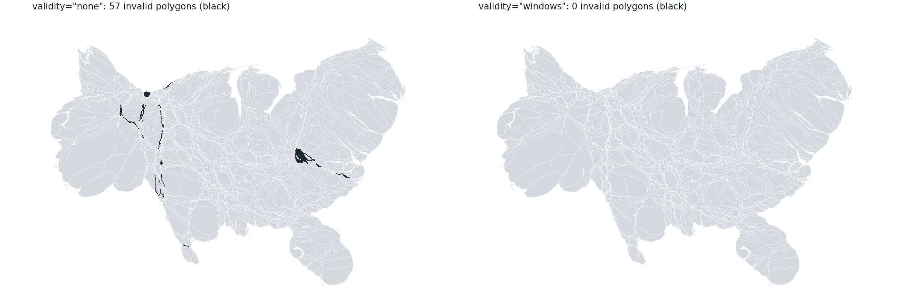
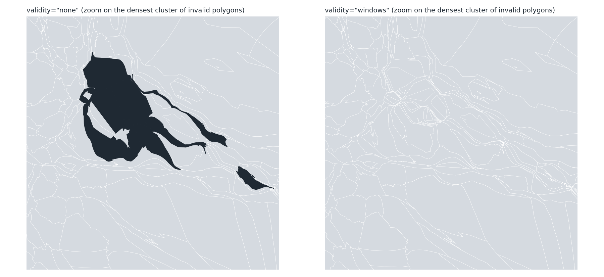

validity="repair-crossings" adds a crossing test and repair to the morph. On the 3,108 counties (1 km input) the output has 0 invalid polygons instead of 57, with 0.1 % more vertices, 1.1 times the time and the mean error and the count above 10 % unchanged; the median and p95 error of the valid regions are higher. Districts: 2 invalid polygons become 0 with identical errors.
before_after.py <output dir> runs the two cases on the branch and draws the figures.
| time | invalid | vertices | mean / median / p95 error | above 10 % | peak RSS | |
|---|---|---|---|---|---|---|
| counties, validity="check" | 39 s | 57 | 768,580 | 1.37 / 0.252 / 2.44 % | 60 | 951 MB |
| counties, validity="repair-crossings" | 44 s | 0 | 769,475 | 1.08 / 0.195 / 2.63 % | 45 | 1,105 MB |
| districts, "check" | 3.5 s | 2 | 343,042 | 0.48 / 0.264 / 1.90 % | 0 | |
| districts, "repair-crossings" | 4.2 s | 0 | 343,046 | 0.48 / 0.262 / 1.89 % | 0 |
These are the numbers of the prototype reports (0 invalid, 769,473 vertices, 1.08 / 0.195 / 2.63 %, 45 above 10 %). The library reproduces them; the author of the implementation and I ran the county cases (the same values). Counties at dt 0.18 / 0.22 and recompute_every 5 / 10 / 20: 0 / 1 / 3 / 0 / 0 invalid against 90 / 116 / 85 / 57 / 104 without the option.
Cartogram.lift_geometries, automatic lifting in animate_morph_history (linear interpolation) and align_vertices (a common vertex set for separate morphs of the same input) make the outputs usable in the animation functions. On the districts, animate_morph_history(..., interpolation="linear", facecolor=...) raised ValueError: operands could not be broadcast together with shapes (405,2) (407,2) for snapshots with 343,042 and 343,046 vertices before the change and builds the animation after it; two morphs with 343,046 and 343,042 vertices align to 343,046 each (area change 0, Hausdorff distance 0, 432 of 432 valid). The scripts anim_test.py and align_proto.py of the session scratch directory are the acceptance checks; 23 new tests, full suite 1592 passed.

The county cartogram with validity="check" (57 invalid polygons in black: the Virginia cluster, the strips along the plains) and with validity="repair-crossings" (none).

The densest cluster of invalid polygons of the baseline (Virginia counties and independent cities) and the same area with validity="repair-crossings". The polygons are valid, and the strips that were squeezed to less than the vertex spacing are drawn as thin valid polygons.